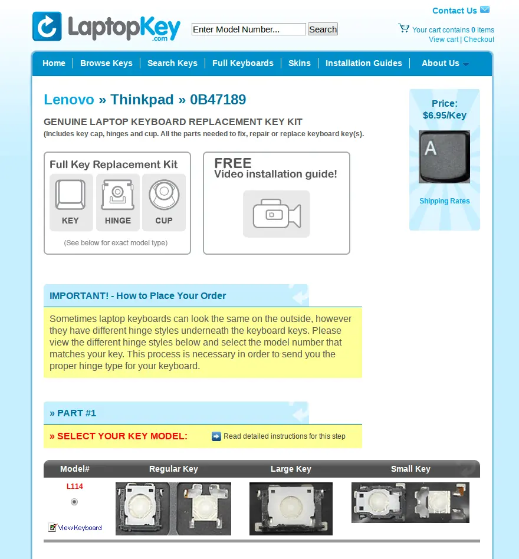

Thinkpad Bluetooth キーボードのキートップを購入した
Thinkpad T480s を購入したため、macでも同じキーボードを使いたいと思い、Thinkpad Bluetooth キーボードを購入しました。
バックパックにいれて持ち歩いていたのですが、取り出すときに「Y」が引っかかってしまい、爪が折れてしまいました。
新しく購入しようと思いましたが、キートップだけ購入したほうが安くすむので、キートップだけ購入しました。
LaptopKeyで購入
ぐぐってみると、LaptopKeyで買えるとのことだったので、注文しました。
以下のような感じで注文しました。
- 自分のモデル（製造番号）を調べる。
- 私が注文した、Thinkpad Bluetooth キーボードの製造番号は「0B47189」です。
- Webサイトの上部にある「Enter Model Number…」に「0B47189」を入力し、検索する。
- 注文する。
スクリーンショットをのせときます。

注文から到着までの日程
以下のような日程で、届きました。
- 2019/01/23 注文完了
- 2019/02/01 到着
キートップ
このような封筒でポストに投函されます。
右が、爪がおれたキートップで、左が購入したキートップです。
ひっくり返して。
直接的には関係ないかもしれないけど、なかのパーツを拡大して。
取り替え
以下の動画をみて、交換しました。
http://www.laptopkey.com/Guides.php/Lenovo/Thinkpad/0B47189/L114
あとがき
Thinkpad Bluetooth キーボードは、マウスが不要なところが気に入っています。
ショートカットの設定を工夫すれば、問題なく操作できます。